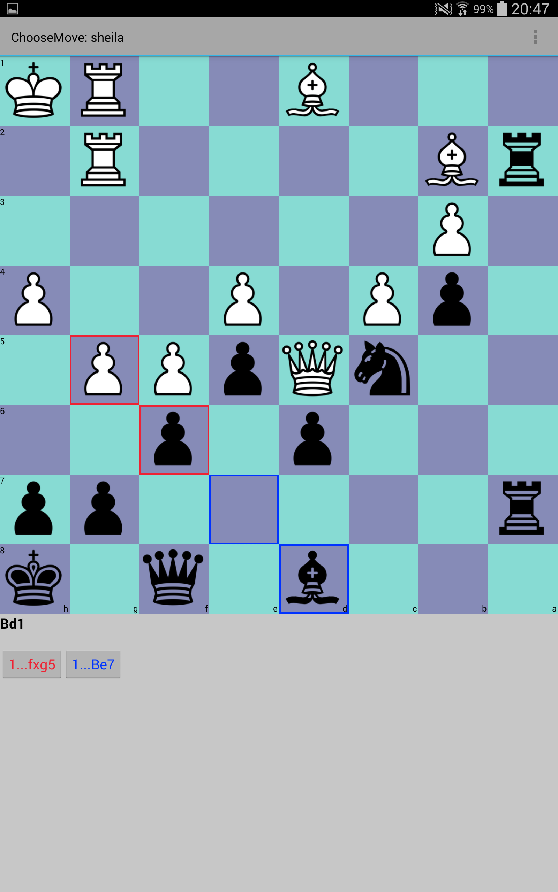
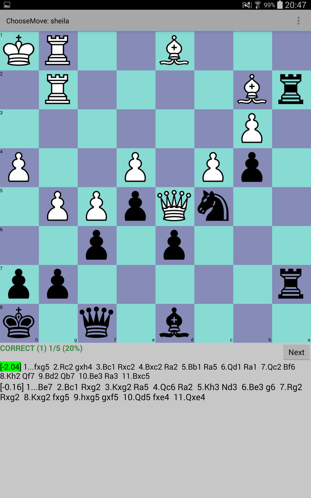
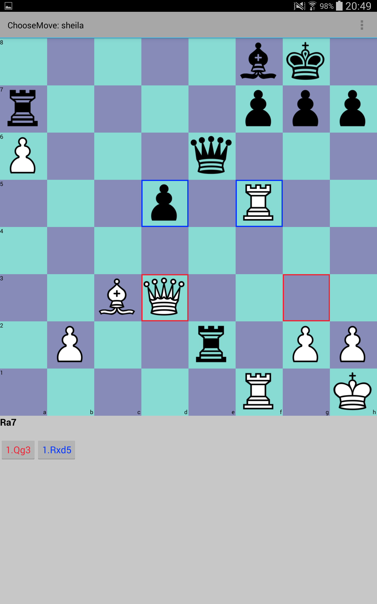
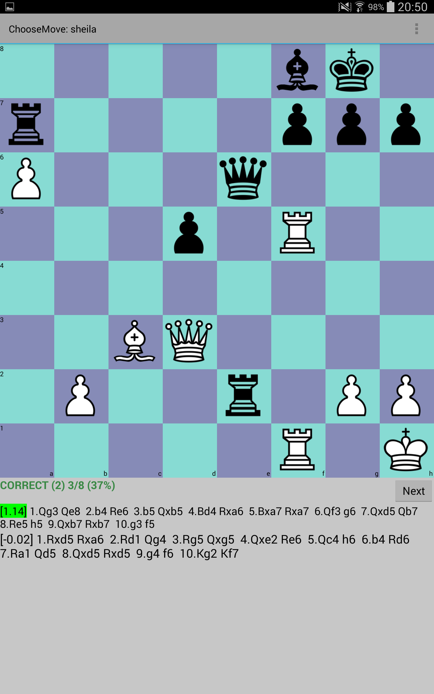
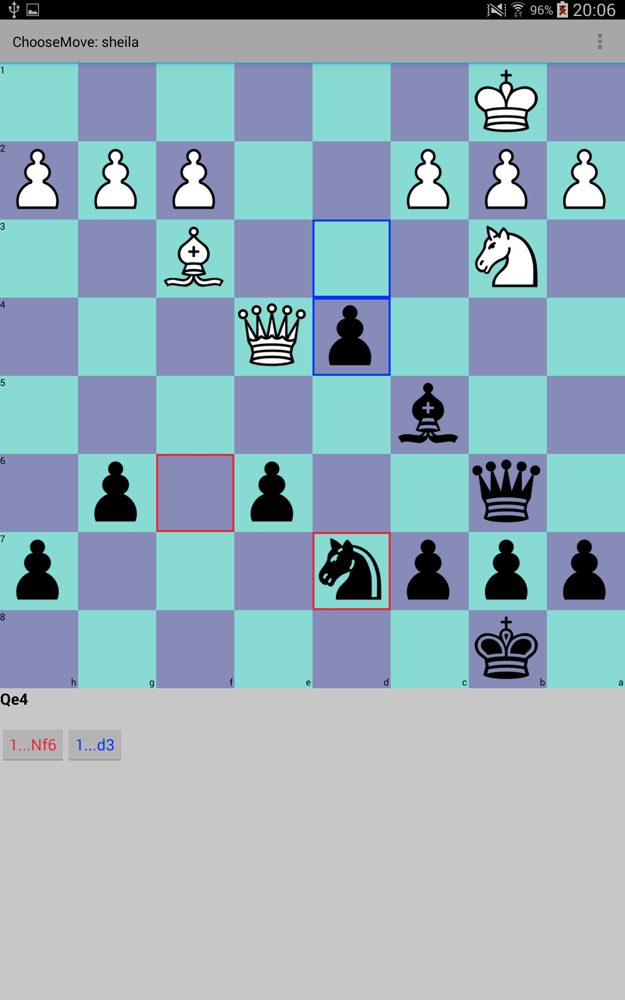
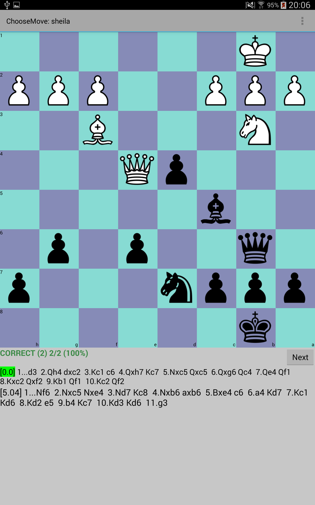

ChooseMove
You are presented with two optional moves. One move
is wrong (and has actually been played in a real game), the other
one is correct (and is the best choice according to the computer). The
challenge is to choose the correct move. This is a very difficult task. Here are some examples:
Example 1

The last move white played is Bd1. Black can now choose between two moves: fxg5 (red move) and Be7 (blue move). After pressing either the red or the blue button, the answer will be shown.

Solution is fxg5. This move is evaluated by the computer as -2 (negative scores are good for black), and gives you a better position.
Example 2

The last move black played is Ra7. White can now choose between two moves: Qg3 (red move) and Rxd5 (blue move). After pressing either the red or the blue button, the answer will be shown.

The right move is Qg3 which is evaluated by the computer as +1.14. As you see, this is only a small advantage.
Example 3

The last move white played is Qe4. Black can now choose between two moves: Nf6 (red move) and d3 (blue move). After pressing either the red or the blue button, the answer will be shown.

Solution is d3. When you play Nf6 you get a loosing position. There might be other moves that are not loosing as well, however d3 is the best move the computer found in this position. It is important that you can calculate that Nf6 will loose.
|